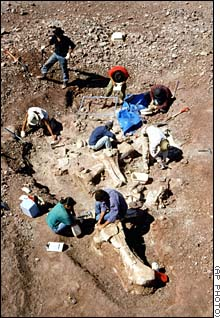
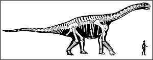

The fossil recovery of the dinosaur species Jobaria. Note the size of the femur bone in the lower right corner. Of course one must interpret the bones found (actually bones that have turned into rocks). There are many things these rocks could be. But given that they are all found in the same area and can be reconstructed to make the skeleton below, the best interpretation (conclusion) is that these rocks represent the fossil remains of an extinct creature.
Reconstructed size of Jobaria compared to a human being based on the fossilized bones found.For more on dinosaurs see: http://www.search4dinosaurs.com/pictures.html